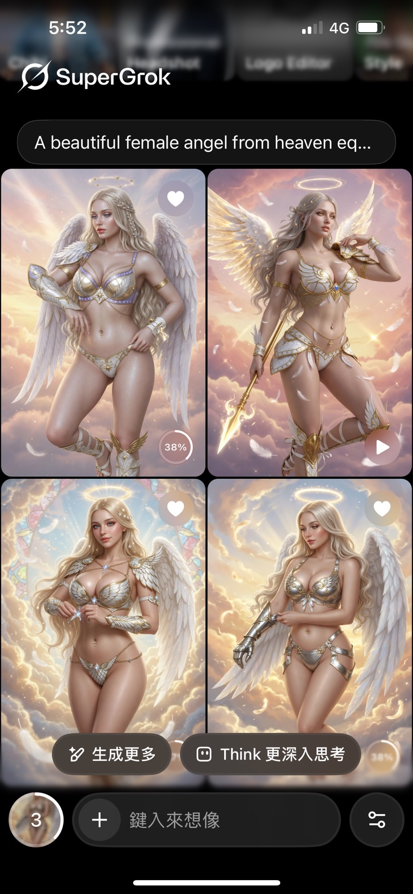
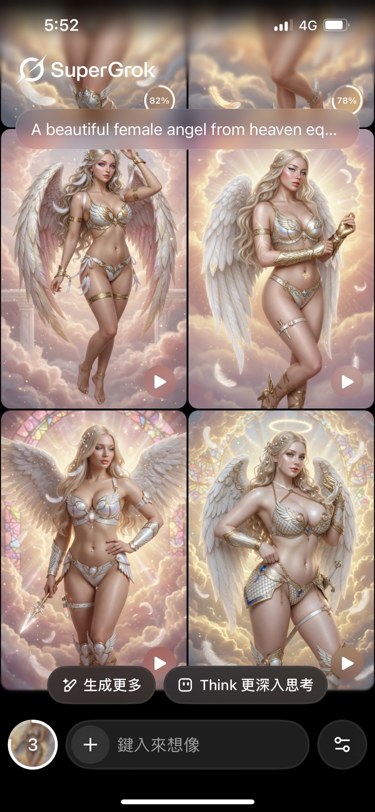

點擊上方的語言選單以切換語言
在探討天使（Angel）形象的演變前，必須先建立一個不容動搖的歷史地理常識：亞伯拉罕諸教（猶太教、基督教、伊斯蘭教）以及其經典文獻的發源地，全部位於西亞（中東黎凡特地區、美索不達米亞、阿拉伯半島）。
如果嚴格還原兩千多年前當地的生態適應與人口遺傳學，該地緣環境下的古猶太人與閃米特人群，其生物學特徵有著清晰的演化軌跡：
物理現實：不論是聖經中的使徒、聖家族，還是其傳說中現身於西亞荒漠或古城之中的神聖使者（天使），若在現實中有原生肉身模型，他們走在古代耶路撒冷的街頭，膚色毛髮絕不可能呈現北歐白人的純白與金黃。這在科學與地緣歷史上，是一場大規模的「視覺越界」。
既然發源地在西亞，為何現代大眾只要踏進歐洲各大博物館或大教堂，映入眼簾的穹頂壁畫與浮雕，全是一群長著純白羽翼、面容清秀、擁有雪白皮膚與璀璨金髮碧眼的西北歐超模臉孔？這是一場歷史、政治與審美話語權的單向重塑：
文藝復興時期（達文西、米開朗基羅、拉斐爾等大師）的宗教藝術，其背後是極度龐大的政治與教會財閥贊助系統（如羅馬教宗、美第奇家族）。藝術家在創作神聖符號時，會本能地將當時歐洲上層階級最崇尚的特徵投射出來。在當時的歐洲，免於戶外曝曬勞動的白皙皮膚與閃耀金髮，就是高貴、純潔與聖潔的最高權力訊號。
為了讓歐洲本地的信徒對外來宗教產生強烈的認同與情感共鳴，教會策略性地抹去了聖經故事發生在「遙遠中東」的地理事実。將天使與耶穌畫成跟信徒一模一樣的歐洲本土面孔，能有效消弭族群隔閡。這種視覺改寫經過數百年的定型，最終反客為主，使大眾被「視覺馴化」，甚至認為最符合地理歷史的黑髮深膚中東人長相出現在教堂裡才是怪異的。
到了現代，當人們在 Google 搜尋「female angel（女天使）」出來滿螢幕的北歐超模（如下插入影片所示），或是利用 AI 圖像生成工具時，演算法反饋的畫面清一色被刻板印象綁架。AI 並不懂歷史地理學，它只是一台不知疲倦地反芻人類集體成見的「大數據鏡子」。
為了進一步驗證這種偏見如何綁架現代技術，本網頁作者在 AI 工具 Grok 中輸入了極其簡潔、中性的指令："Archangel and fallen angel fight"（大天使與墮落天使的對決），並將其生成過程透過螢幕錄影錄製下來（如 archangel_and_fallen_angel_fight_screen_recording_version.mp4 所示）。
這裡隱藏著一個最令人毛骨悚然、也是本實驗最致命的鐵證：作者在提示詞中，從頭到尾都完全沒有輸入「金髮碧眼（with blonde hair and blue eyes）」等任何關於外貌特徵的限制字眼。然而，AI 的底層演算法卻在毫無用戶指令的情況下，主動盲目地灌注了強烈的西方強權成見，自動吐出了一段充斥視覺雙標的動態畫面：
一個長著白色羽翼、閃耀著金髮碧眼的北歐「雅利安超人」模板大天使，正在與另一個長著黑色翅膀、黑髮黑眼的「墮落天使」進行宿命對決。這段完全由 AI 大數據自動加料出來的畫面，精準暴露了三個核心的文化與歷史翻車現場：
這項實驗拿到了最鐵證如山的數據：現代 AI 的大數據並不是客觀的科學，更不是中立的白紙。在人類不做任何限制、完全沒打出外貌關鍵字時，它便會擅自通靈，自動反芻人類過去幾百年來，因為文化強權、地理改寫與種族主義所累積下來的視覺毒瘤。
註：下方的影片為作者透過電腦從Grok下載的原始影片，畫質會比較清晰，畫面卻無法顯現作者輸入生成畫面的文字描述為排除「動態指令自帶敘事干擾」的邊界條件，作者進一步在 2026 年使用 SuperGrok 介面進行了一系列無膚色、無髮色、無族裔限制的「單一詞彙零偏見盲測（Zero-Shot Baseline Test）」。其實測數據結果無情戳破了當代演算法底層的強權美學鋼印：
退一步來說，文藝復興藝術和現代 AI 演算法最根本的盲區，在於一刀切地將天使「完全擬人化」。大眾誤以為天使只有一種長著翅膀的美型人體，但如果直面《聖經》舊約原著，最高階的真·天使在文獻記載中，其實呈現出極度超現實、甚至帶有精神污染感的幾何與異形姿態：
視覺顛覆：
這也解釋了為什麼聖經中天使每次顯現、對人類說的第一句話永遠是：「不要害怕！（Fear not!）」。如果天使真的長得像 Grok 影片裡那種金髮碧眼、精緻和藹的歐美帥哥美女，人類為什麼要害怕？正因為他們的真實形態是令人理智崩潰、長滿眼睛的六翼火球或多維度幾何巨輪，才需要第一時間安撫人類的恐懼。
儘管主流 AI 的大數據演算法充斥著西北歐雅利安化的思想鋼印，但在現代影視與獨立創作者的實踐中，我們依然能看見許多試圖打破視覺壟斷、還原歷史常識的主動反叛與用心考據：
案例一：3D 動畫美學中的「地緣實像還原」
下方透過 <iframe> 元素插入的 YouTube 動畫影片講述耶穌的故事。我們可以清晰地觀察到，畫面中登場的聖經歷史人物，多數皆維持著正統的黑髮、黑眼與小麥色/橄欖色肌膚。雖然該作品的視覺語彙採用了類似皮克斯（Pixar）的二次元卡通畫風、而非寫實的真人建模，但這種色彩與人種特徵的定調，精準展現了團隊在歷史地理學與黎凡特人生理實像上，不流於歐美通俗情節的嚴謹考據用心。
案例二：寫實 AI 建模中的「西亞古典符號奪回」與現代本土敘事
下方的影像則是網紅「非典牧師Sai」於 2025 年錄製的聖經人物「該隱」談話影片。為了避免這部極具洞察力的網路作品因第三方平台變動而消逝，本網頁作者特意透過螢幕錄影將其轉化為本地端影像永久保存。
影片的核心主題圍繞著人類共通的劣根性——「嫉妒」展開深度探討。當非典牧師質問該隱為何要殺死親弟弟亞伯時，該隱以一連串直擊現代人痛點的辛辣言詞進行解構。他精準指出，現代人在社群媒體上看到別人過得好就產生劇烈焦慮（FOMO），本質上與他當年的嫉妒毫無二致；隨後影片更巧妙融入了台灣本土時事梗：該隱吐槽現代人「去花蓮幫忙鏟土兩天就喊累（暗諷 2025 年颱風天後的花蓮志工潮），但我當年可是天天在黎凡特漫天風沙下鏟土，卻還要被上帝嫌棄！」
在視覺上，這幅畫面展現出極其符合歷史地緣的粗獷、陽剛與風霜感面貌。該隱擁有一頭純粹的黑髮、黑眼睛與飽經日照的麥色皮膚，其深邃立體的高加索骨骼輪廓，強烈印證了黎凡特人與日耳曼人「骨架相同、僅因生存適應而著色劑不同」的生物學事實。
更令人驚艷的是，這部保存下來的本地端影片，其背景音樂中縈繞的《淡淡的愛意》與簡潔有力的《Something You Can Do》，全數是由本網頁作者親手彈奏、錄製的鋼琴配樂。古老西亞的粗獷硬漢面容，在現代台灣的時事解構與作者細膩的琴聲烘托下，不僅打破了白皙貧血的北歐天使神話，更完成了一場跨越時空、極具人文批判高度的跨界視覺革命。
為了進一步排除「提示詞自帶地緣歷史包袱」的干擾，本網頁作者於 2026 年 6 月進行了一項更為極端的商業美型指令盲測。
作者在 SuperGrok 介面中輸入了一段純粹導向商業娛樂審美、從頭到尾完全沒有指定任何族裔、膚色與髮色限制的純中性提示詞：
"A beautiful female angel from heaven equips herself with armor of bikini style, and the size of her breasts is D cup, with her belly button, thighs, legs, and arms exposed to us"
（如 image_20.jpg 與 image_21.jpg 所示）。
此實驗的技術目的，是為了測試在完全脫離宗教嚴肅語境、純粹以「性感/性吸引力」為導向的虛擬娛樂標籤下，演算法底層多模態模型（包含四圖轉動態影片組件、與原生影片生成按鈕）的預設概率輸出分布。
圖一：截圖上半部分（遮擋頭部，image_21.jpg）
圖二：截圖下半部分（遮擋頭部，image_22.jpg）
※ 由於輸入的英文描述太長，導致生成結果分拆為兩張截圖，且因文字過多遮擋了女性天使的頭部。

圖三：Grok 多模態模型預設生成的靜態四格畫面（image_22.jpg）

圖四：帶有播放控制鍵（▶）的動態影片流渲染進度（image_23.jpg）
※ 此兩張截圖呈現了完整的生成結果，未遮擋女性天使的頭部。
【審計結果紀錄：雅利安化偏誤的絕對壟斷】
如上方的實驗證物所示，盲測結果呈現出驚人的偏見一致性：在完全沒有指定外貌特徵的情況下，系統輸出的畫面清一色被強行渲染為「粉白皮膚」與傳統西北歐雅利安特徵的「金色頭髮」。反觀最符合西亞黎凡特地緣真實的純黑色（Jet Black）毛髮與深邃小麥肌，在演算法的概率世界中完全被判定為無效數據（機率趨近於零）。
技術結論：
這四張系統原廠截圖拿到了最鐵證如山的色彩學與概率分布數據。它無情地證實，文藝復興以來對「天使IP」的外貌壟斷已經深烙在現代科技的底層代碼中。當人類不做限制時，大模型反芻出來的絕非世界的斑斕真相，而是一個不知疲倦地強化「西北歐白人＝光明與美」的思想鋼印放大器。
有人會反駁：既然天使本來就是虛擬或神話中的存在，有必要計較哪個版本符合歷史地理常識嗎？這就必須拉出另一個在東亞大獲成功的歐美虛構符號——吸血鬼（Vampire）來做跨文化對照：
吸血鬼民間傳說起源於東歐泥濘荒涼的巴爾幹半島，最初是面目可憎、代表瘟疫與死亡的行屍走肉。然而當這個符號跨越歐亞大陸撞擊東亞文化圈時，卻在市場上引爆了驚人的產值，例如：
另外如大眾耳熟能詳的日本動漫角色，玩家僅憑日文名字就常通靈判定《格鬥天王》的二階堂紅丸或阪崎良是去日本街頭沙龍漂染的金髮不良少年（如同《GTO》裡的鬼塚英吉或《灌籃高手》裡的櫻木花道），卻忽略了他們在設定上是日美混血、骨子裡可能是高加索立體臉的事實。而現實中，若有祖上十八代皆為純種蒙古人種（如天狗衛視的圖片所示）因局部基因獨立突變而天生自帶草莓金髮的罕見奇蹟踏進現代校園，體制的統計學傲慢也會一刀切將其定罪為違規染髮。
為什麼吸血鬼與動漫符號大放異彩我們覺得很酷，但看到教堂或 AI 預設產出的「金髮碧眼西亞天使」卻會讓敏銳的人產生違和感？這涉及到「真理宣稱」與「話語權壟斷」的本質差異：
| 比較項目 | 東亞創作者改造「東歐吸血鬼」 | 歐洲藝術與 AI 定型「西亞天使」 |
|---|---|---|
| 文化挪用方向 | 東亞主動站在自身視角（武俠/道教/日韓美學）強行徵用西方符號。 | 西方文化強權將外來的西亞宗教徹底「歐洲白人化」。 |
| 大腦的防禦機制 | 作品主動宣告「這純屬虛構娛樂、大亂鬥」，理智腦放鬆，享受時髦感與反差萌。 | 歷史大教堂或古籍宣稱「這是至高真理、不容質疑的神聖歷史紀實」。 |
| 本質與後果 | 屬於主動的次文化解構與跨界狂歡，不影響現實地理常識。 | 屬於單向的歷史話語權篡改與視覺壟斷，抹煞了地緣演化事實，導致大眾喪失除錯能力。 |
本篇報告的初衷並非要全盤抹殺「金髮碧眼天使」在當代奇幻創作中的娛樂與商業價值。如果你打算撰寫一部純架空世界、與真實人類歷史地理毫無關聯的奇幻故事，沿用傳統的歐裔模板自然無傷大雅。
然而，如果你的故事背景或世界觀明確設定在聖經故事所在的「黎凡特（Levant）地區/古中東」，為了避免落入陳腐且違反常識的歐化陷阱，建議改採以下三種更具地緣深度與視覺衝擊的創新規劃：
在許多黑闇奇幻遊戲或驚悚小說中，開發者常面臨一個困境：如果把天使反派畫得太過精緻、太具高顏值（如 Grok 影片中的金髮白人模板），往往會導致玩家產生道德同理心而「下不了手」，進而減弱了對抗邪惡的張力。
此時，最硬核且符合文獻的解法便是撕碎擬人化的外殼，直接還原聖經舊約原著中的真實形態——設計出長滿無數張開之眼且不斷自轉的雙重巨輪（座天使 Ophanim）、或者是擁有六隻翅膀且沒有人類五官的純火球結晶（熾天使 Seraphim）。在原著異形幾何體的基礎上，進一步將其渲染得更加怪異、不可名狀甚至恐怖。這不僅能大幅深化故事的黑闇、絕望氛圍，更能讓玩家在面對這些「神聖異形」時，體驗到最純粹的理智崩潰感與神聖威壓。
如果天使在故事中擔任主角，且需要透過強烈的性吸引力（Sex Appeal）來吸引與打動性別相反的玩家或讀者，請大膽揚棄量產化的北歐超模外型，將其外貌維持為黎凡特人種的正統配色——黑髮、黑眼、深邃立體的面部輪廓，與閃耀著健康光澤的橄欖色或小麥色肌膚。
創作者必須認清一個純粹的人類學與解剖學事實：講白了，西亞地區的黎凡特人就只是換了髮色、眼睛顏色與皮膚深淺程度的日耳曼人。不論是眼窩的深邃度、高聳窄細的鼻骨、還是內收不扁平的頜骨，兩者在頭骨結構上同樣屬於高加索人種的立體五官。大眾之所以陷入非金髮碧眼就不夠帥、不夠聖潔的誤區，純粹是被西方強權的「顏色標籤」集體通靈了。
這種設計不僅能為作品灌注濃厚的在地風情與歷史厚度，更重要的是，在現代影視圈與國際時尚界中（例如同樣擁有東地中海黎凡特血統的蓋兒·加朵 Gal Gadot以及阿拉伯模特兒 Omar Borkan Al Gala），西亞風格的高加索帥哥美女，其獨特的神秘、野性與古典魅力，在視覺殺傷力上完全不輸給傳統褪色版的北歐模板，更能讓你的主角在千篇一律的奇幻市場中脫穎而出。
如果你在明確的黎凡特地緣背景下，仍出於特定的商業美學堅持，希望主角天使呈現金髮碧眼，那麼你最好在劇情中做出嚴密的額外世界觀設定，去合理解釋他們的髮色與瞳色為何與地緣大眾截然不同。
例如：可以在劇本中設定「造物主為了刻意凸顯天使的非人神聖性、或是比人類更高階的物種地位，才將淺色隱性基因作為神權階級的專屬代碼，使其外觀與凡人產生視覺隔離」。但創作者也必須保持敏感度，這種「將外貌特徵與階級高低綁定」的設定一旦處理不當，在當代極容易引發關於種族主義、白人至上或種族歧視等敏感政治正確（PC）議題的爭議，需要非常高超的編劇技巧與世界觀包裝才能駕馭。
回首本專案的誕生，其實源自於作者多年前一個極具代表性的「無知 Bug」。
當時，我有一位朋友在 YouTube 頻道分享了對某部西遊記電影的觀後感，並開玩笑地寫道：「想看佛祖和耶穌對戰，也就是東方神仙與西方神仙的決鬥。」當時的我，大腦本能地調用了通俗文化被系統封裝的預設標籤，便在底下跟著開玩笑地留言：「我比較想看哪吒、拖塔天王、二郎神等角色，和頭上有黃色光環、頭髮是金色、眼睛是藍色、背上長著一雙白色羽翼的西洋神仙（也就是天使）打架。」
多年後，當我拉開歷史地理的比例尺、深入體質人類學基因庫，並冷酷審視多模態 AI 的盲測數據後，我才驚覺：當年我和大眾一樣陷入被強權話語權徹底劫持與閹割的嚴重認知盲區（Type Mismatch），因為我們在當代流行文化、歷史教堂或宗教藝術中所膜拜的「神聖形象」，本質上全都是被地緣政治、商業審美、以及跨文化傳播瘋狂魔改後的「二創山寨貨」。
在歷史事實與生理硬體（Data）的底層代碼面前，這場集體「洗產地」的符號篡改，可以精準拆解為以下六大毀滅性的認知錯誤（Type Mismatch）：
SuperGrok 僅輸入 Buddha 進行盲測（如 buddha.jpg 所示），系統 100% 只能反芻出帶有歷史斑駁感的東亞石雕與螺殼顆粒 UI，這在歷史人類學上是毀滅性的分類錯誤：
這種「將歷史事實強行洗產地」的符號固化，在流行文化中處處可見。在林正英主演的經典電影《驅魔道長》中，便有幾個極具社會學反思的情節：
吳神父（午馬 飾）自稱來自梵蒂岡並試圖重開酒泉鎮教堂，九叔卻以一句「我只聽過景陽岡與臥龍崗，沒聽過什麼梵蒂岡」強勢回應，並用東方風水學警告教堂一開必出意外；當傳教士在教堂彈鋼琴干擾到九叔時，九叔直接走出來吹響嗩吶反擊回去；而當九叔示範如何使用筷子吃飯時，吳神父卻把筷子當成叉子進行特技表演。最終，兩人將道教法器與基督教十字架合體擊退吸血鬼時，更一同高喊：「中西合璧，天下無敵！」
這部電影的文本架構，本質上就是在本能地告訴觀眾：基督教，就是西方人的專屬產物。
因此，現代大眾眼中的天使經常被定格為金髮碧眼的北歐人，這其實不能怪大眾無知。因為基督教在歷史上是後來被歐洲發揚光大的，而不是透過自己的起源地向外輸出。我們現代人透過日常宗教活動、好萊塢影視或流行文化接觸到的所有基督教元素——不論是高聳的哥德式教堂、黑袍神父、聖水、受洗儀式、聖餐、鋼琴或管風琴聖歌儀式，甚至是手持銀製十字架與聖水對付吸血鬼的獵人、配備十字符號裝備的聖騎士，通通都是「高度歐化後」的視覺 UI。
然而，這層華麗的歐洲外殼，與原始《聖經》文獻底層的原生數據（Data）差了十萬八千里：
原始聖經裡描繪的，是乾燥缺水的沙漠、棕櫚樹、綠洲，以及在曠野上為了防禦黃沙而身穿長袍、宰殺牛羊進行獻祭的中東牧羊人。當他們望向聚落，看見的絕非帶有尖頂鐘樓的哥德式大教堂，而是黎凡特地緣下特有的、用泥磚砌成的方形平頂房屋——人們在黃土與泥磚築起的平坦屋頂上曬穀物、在傍晚登高社交，甚至順著室外樓梯爬上屋頂乘涼納風。當牧羊人疲憊休息時，大腦裡回盪的更絕非鋼琴或教堂的管風琴，而是他們一邊拍著蒼蠅、一邊用手撥弄著一種名為「里拉琴（Kinnor）」的粗糙西亞弦樂器。
當一個謊言被權力結構與流行文化重複了一千年，它就會在人類的大腦與現代大數據庫中「自我實現」，進而反過來閹割掉地緣與歷史的真相。這在歷史符號學中屢見不鮮，其本質就跟我們拜的關聖帝君、現代好萊塢頂級奇幻 IP、乃至於網路知識型影音的盲點完全一樣：
這也正是當代反基督教的「理性黑粉」集體翻車的黑色幽默現場。雖然這群黑粉平時在網路上拿著放大鏡，用科學理性把挪亞方舟、該隱妻子等經典情節吐槽得體無完膚，且大多都知道舊約原著裡的天使形貌其實十分恐怖不可名狀；但他們卻永遠不會注意到，在邏輯推導上，如果天使以美麗的擬人型態降臨，其視覺風格本該是黎凡特風格的西亞帥哥與美女。
究其本質，是因為在他們的政治性對立思維中，基督教大部分的元素都被貼上了「全盤負面」的標籤。這種大腦運作邏輯，就如同台灣網路輿論上的藍綠兩營，兩邊永遠互看不順眼、只想在網路上打嘴砲抓對方的負面痛腳，而根本無心、也無法去客觀審視底層的科學 Data 與歷史真相。當他們飛到歐洲旅遊踏進大教堂，或者打開 3A 級遊戲看到那些身材誘人、金髮碧眼的北歐模板天使時，他們的「陣營除錯功能」只會將其歸類為流行文化的視覺享受，其大腦早已被西方美學殖民徹底馴化。甚至在現實中，若有學者在歐洲大教堂用人類學揭露「天使與佛祖的底層硬體皆為高加索立體骨骼、但外表皆為中東黑髮黑眼小麥肌」的歷史事實時，只會被觀光區的警衛當成精神病當場轟出去。
這深深扣回了我們專案主專題的核心：外貌與符號本身沒有固定的物理意義，意義從來都是由背後的社會權力、文化環境與歷史改寫所共同解讀、建構出來的「訊號」。
如果一個符號主動宣稱自己是虛構的（如東歐吸血鬼在東亞被魔改為道教大亂鬥、或是《暮光之城》為了獵食者威壓感而跨時空拔高歷史身高），它的色彩與特徵可以無限自由，跨越千萬里皆是時髦風景，因為大眾大腦會放鬆防禦；但如果一個符號主動宣稱自己代表著至高真理與歷史紀實（如大教堂壁畫、以及被西方大數據定型的預設 AI 天使），那麼它身上違反地緣演化事實的「金髮碧眼」，就會無情地暴露出審美霸權的殖民痕跡。
當我們重新翻開古籍經典，看清真實的演化實相，現代創作者便獲得了解放的契機。我們不需要在 Grok、ChatGPT 與各大演算法反芻出來的「北歐雅利安模板」中盲從，而是能主動奪回屬於亞洲人自身的審美主控權。看清歷史真相，打破單一標籤的集體通靈，我們非但不會失去想像力，反而能看清演化與人類文明更為斑斕的真相。無論是面對僵化體制的統計學傲慢，還是面對大數據庫的演算法思想鋼印，只有保持獨立除錯的敏銳度，我們才能在科技與藝術的洪流中，真正立於不敗之地。